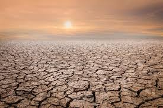
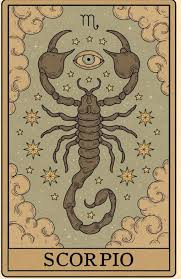
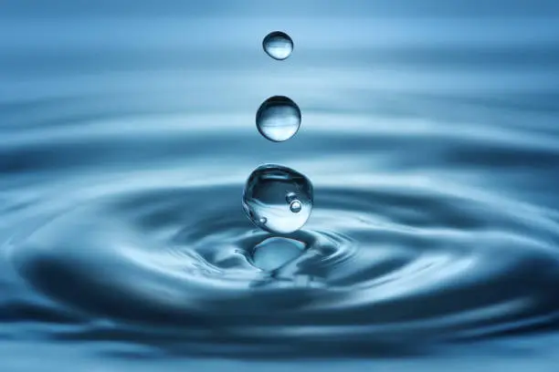

This gallery contains visual fragments of Scorix Verso's world, including the desert environment of Aquara DUNE, symbols connected to his identity, and the water energy that fuels his abilities.

The cracked ground of Aquara DUNE where water once flowed.

The ruins of the city that Scorix protects.

The endless desert landscape that shaped Scorix's resilience.

The scorpion symbol representing Scorpio, transformation, and hidden power.

The element of water, the source of Scorix Verso's abilities.